This minimalist GUI serves as a method to explore the results of our Deep Learning group project!
More concretely, you will be able to interact with some of the data and findings to better understand the intuition and implications of our results.
Without further ado, let's explore!
Overall Results
We will first go through the overall results of our various models.
Note that the model names are in the following format: network_feature_{in/out_dist}.
Experiment
Accuracy
F1
ROC AUC
EER
WaveRNN_wave_I
0.653
0.649
0.6527
0.3502
WaveLSTM_wave_I
0.749
0.742
0.7494
0.2640
ShallowCNN_lfcc_O
0.937
0.939
0.9366
0.0926
TSSD_wave_O
0.956
0.957
0.9561
0.0561
SimpleLSTM_mfcc_I
0.960
0.960
0.9601
0.0404
SimpleLSTM_lfcc_O
0.965
0.965
0.9651
0.0441
SimpleLSTM_lfcc_I
0.996
0.996
0.9962
0.0042
ShallowCNN_mfcc_I
0.997
0.997
0.9968
0.0049
TSSD_wave_I
0.999
0.999
0.9994
0.0011
ShallowCNN_lfcc_I
1.000
1.000
0.9996
0.0004
Try It Out!
In this section, you can select either a real audio or a fake audio from a subset of our dataset, listen to it, and see how our model performs. Any audio file with a "_gen" suffix is fake, otherwise it is real. The selected model is our best model so far: ShallowCNN_lfcc_I.
Transcript:
The prediction result will appear here.
Interesting Results
There are 2 data points that 5 of our classifier models have wrongly predicted. The data point names are:
LJ045-0047
Transcript: and I told him that
LJ045-0087
Transcript: Mrs. Oswald told another of her friends that Oswald was very cold to her, that they very seldom had sexual relations
The above audio files are the real human voices, obtained from the LJ Speech dataset. Here are the corresponding fake ones generated by MelGAN:
LJ045-0047_gen
Transcript: and I told him that
LJ045-0087_gen
Transcript: Mrs. Oswald told another of her friends that Oswald was very cold to her, that they very seldom had sexual relations
If you try to listen to the audio files, they are very similar and virtually indistinguishable to the human ear. If you pay very close attention, you can make out faint distortions in the fake audio files generated by MelGAN. Isolated from each other and without a direct comparison, it is quite difficult to identify and differentiate them. Let's take a closer look at their features.
Audio Features
Let's take a look at their waveforms first. You can drag the slider across the images to observe the differences.
LJ045-0047
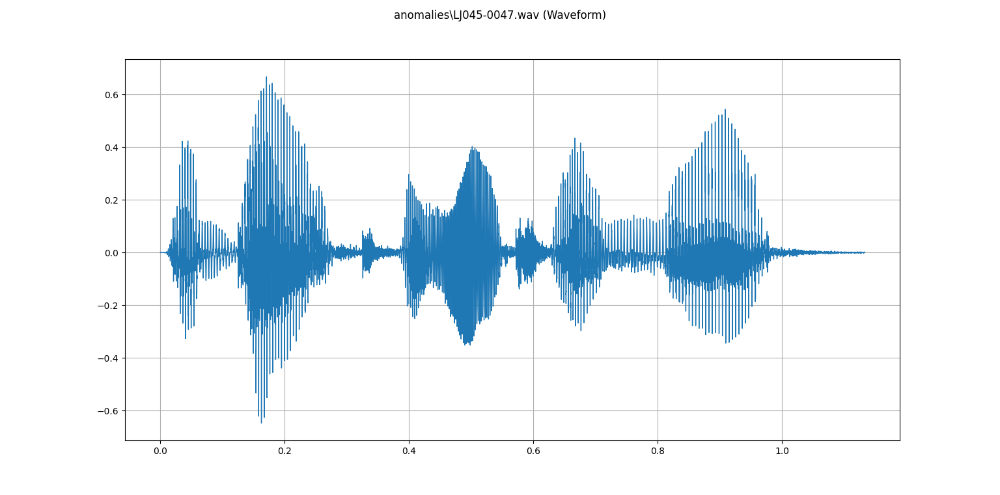
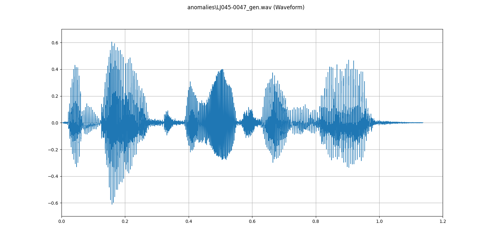
LJ045-0087
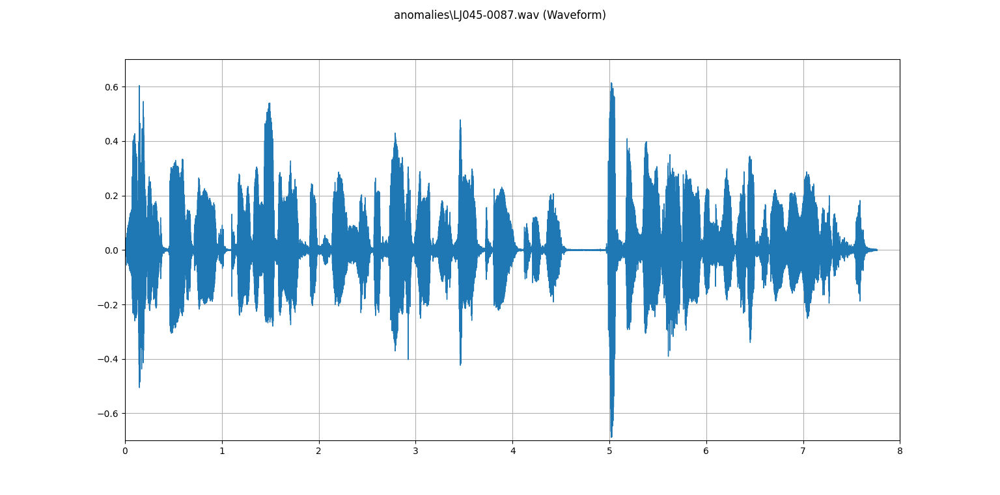
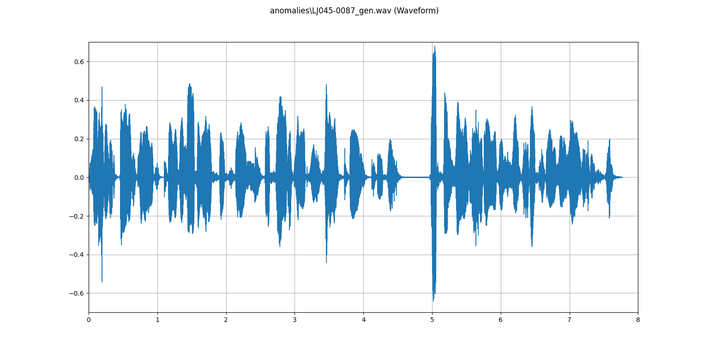
Next, we will take a look at their spectrograms.
LJ045-0047
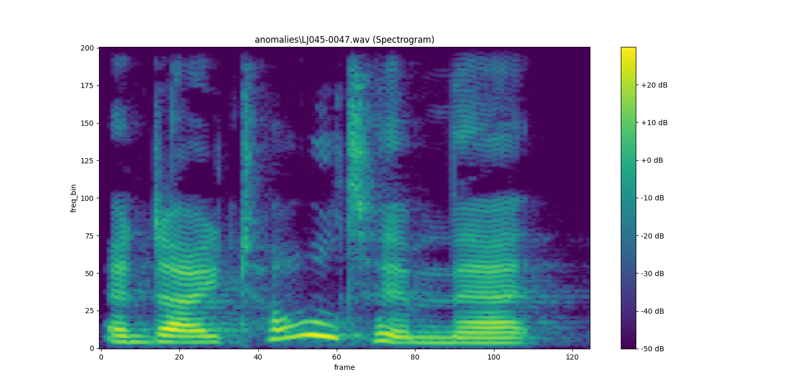
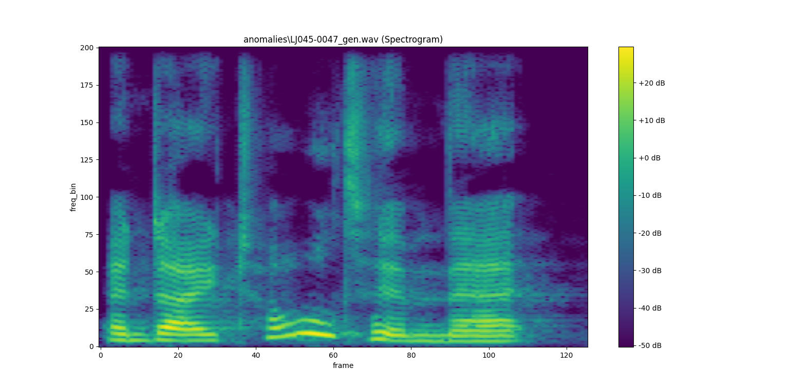
LJ045-0087
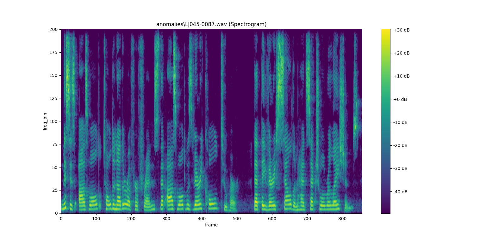
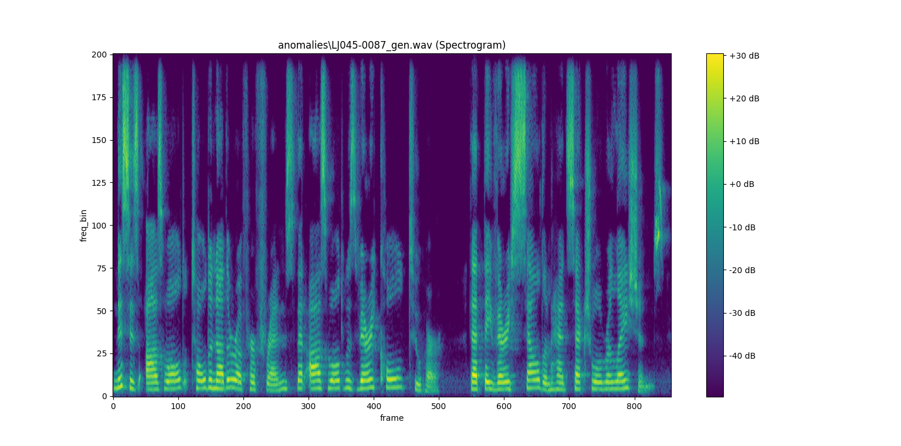
Now, we will take a look at their MFCC features.
LJ045-0047
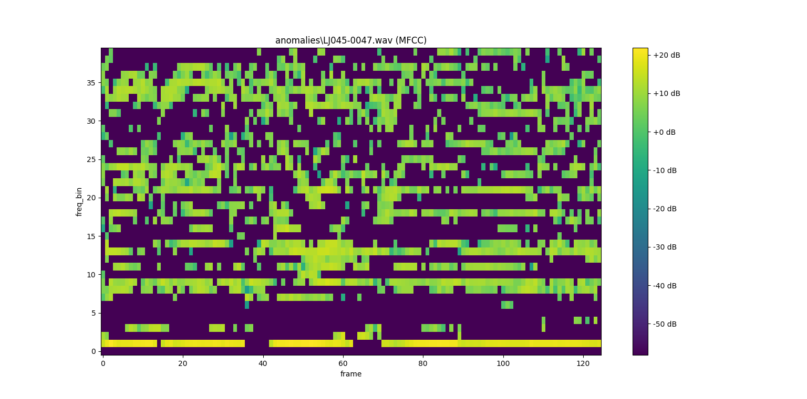
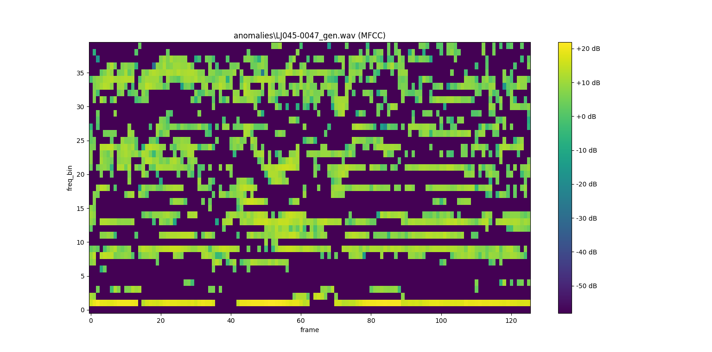
LJ045-0087
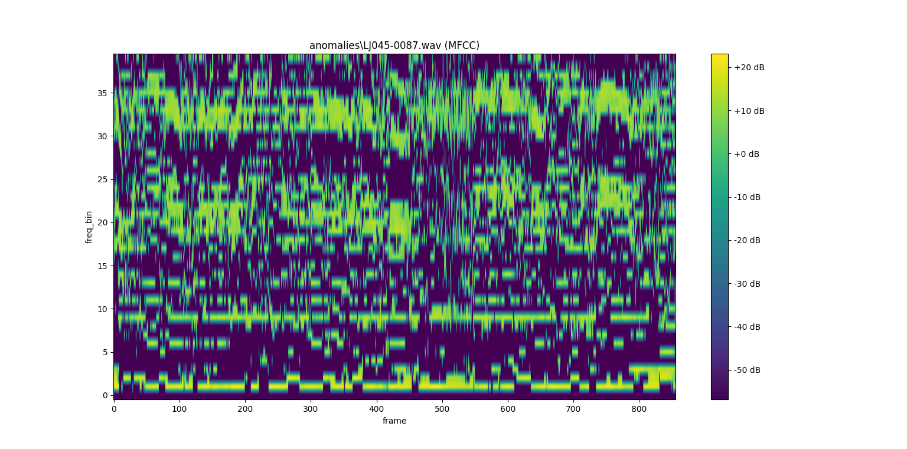
And finally, we will take a look at the LFCC features.
LJ045-0047
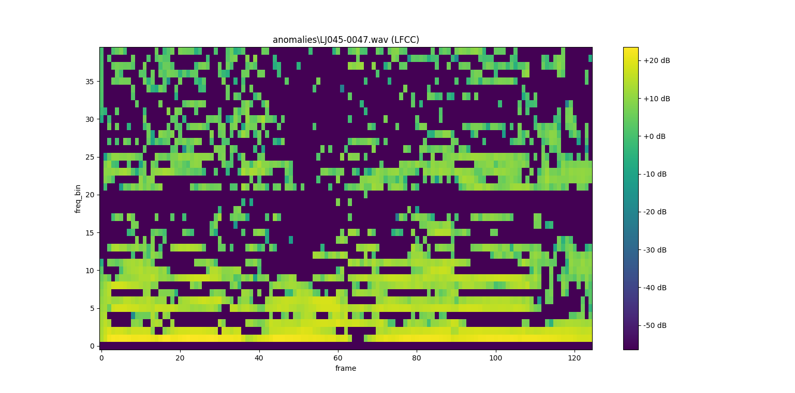
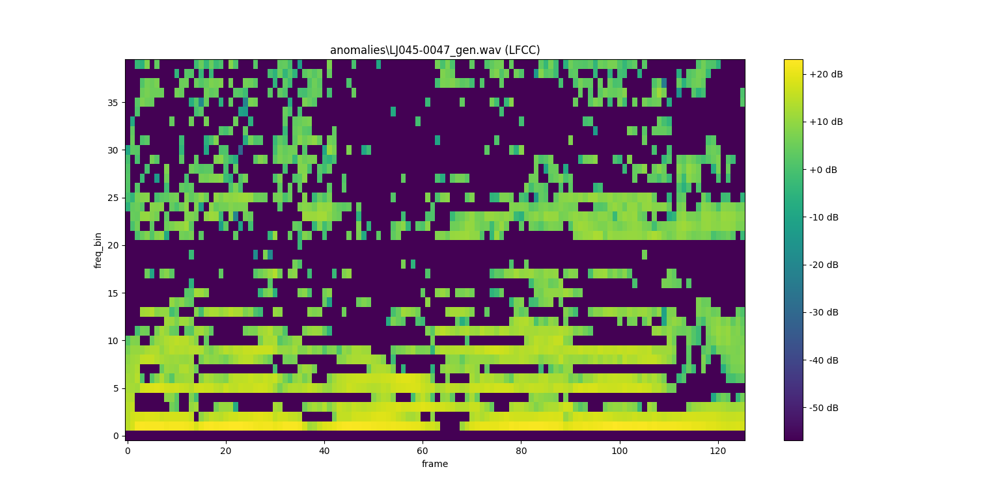
LJ045-0087
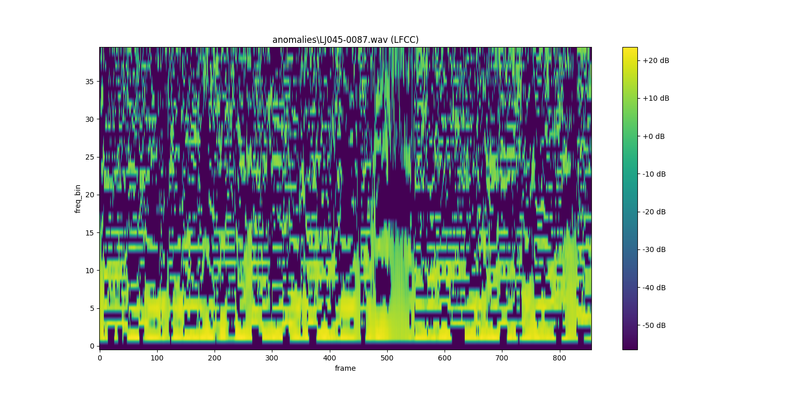
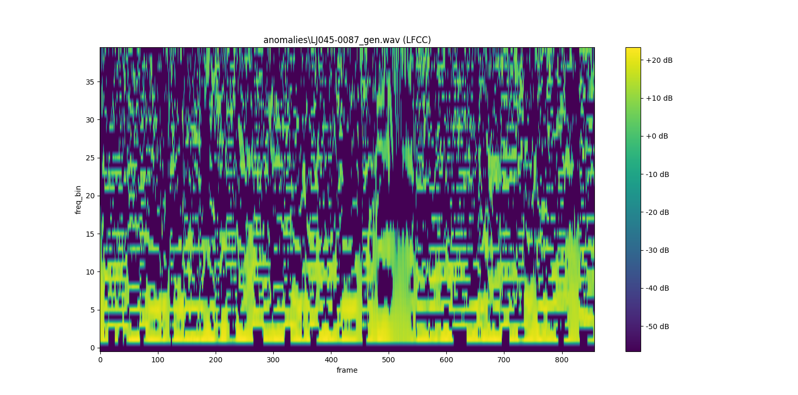
As you can see, all of the features are quite similar. The main blocks in each of the features are mostly the same, and they only differ in the finer details. Hence, this explains why the models have a harder time in differentiating them.